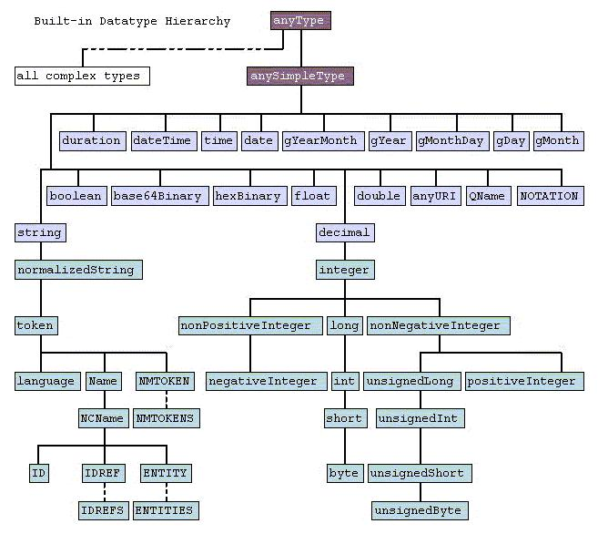
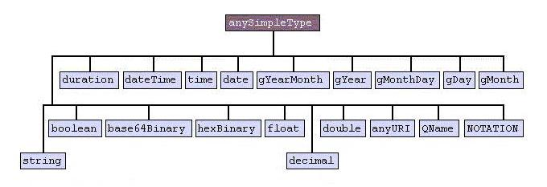
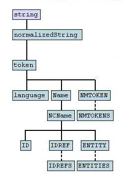
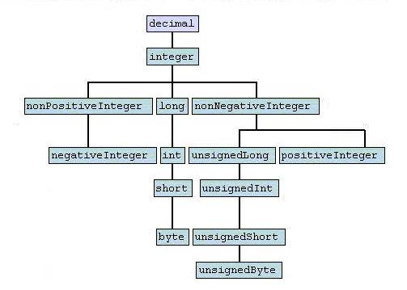
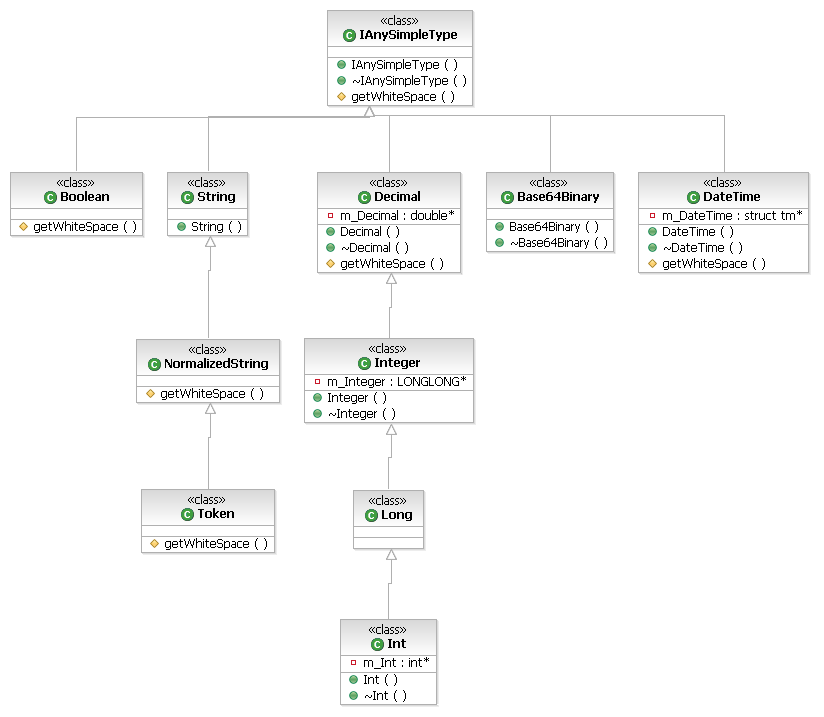

The types and formatting of data transmitted in a SOAP message is defined by the XML Schema, in particular Part 2 : Datatypes. The full specification can be seen here.
Within section 3 of the above specification 44 built-in datatypes are described, encompasing Strings, numeric, time and encoded binary datatypes. These datatypes are split into two groups, primitive and derived types.

The XML schema provides 19 primitive types. As all data is represented in text form within XML, the value space for each datatype needs to be specified, for example numeric types cannot contain alphabetic characters. To do this, each type defines a number of contraining facets and the values within these facets allows the XML engine to validate the data. See Constraining Facets below for further information on how these are used.

See section 3.2 of the specification for full detail on each datatype.
The XML Schema allows additional types to be derived from the primitive types, and has 25 built-in derived types. 12 data types are derived from the string primitive data type.
The remaining 13 data types are derived from the decimal primitive data type.

A derived type uses the same contraining facets as the type from which it is derived, but provides differing values for one or more facet so as to further restrict the value space. For example; the decimal allows fraction digits, while the integer derived type sets this facet to 0.
See section 3.3 of the specification for full detail on each datatype.
In the same way as the XML Schema defines a number of built-in datatypes the user can also provide additional derived types. This can be done in the WSDL document, or an XSD referred from a WSDL document.
The following shows how you can create a new type called direction, which is derived from the NMTOKEN built-in type, to only have the values fromKey and toKey, by restricting the enumeration constraining facet.
<xsd:simpleType name="direction"> <xsd:restriction base="NMTOKEN"> <xsd:enumeration value="fromKey"/> <xsd:enumeration value="toKey"/> </xsd:restriction> </xsd:simpleType>
As mentioned above, the value spaces of each of the built-in types are controlled by constraining facets. The XML Schema provides 12 constraining facets, as described in section 4.3.
The 12 constraining facets are:
lengthminLengthmaxLengthpattern - describes the form of the data, typically using regular expression syntax.enumeration - specifies a fixed set of permitted valueswhiteSpace - how to handle whitespace characterspreserve - value is unchangedreplace - all occurances of tab, line feed and carriage return are replaced with a spacecollapse - after the process of replace, remove all contigious repeating occurances of spaces, and strip leading and trailing spacesmaxInclusivemaxExclusiveminExclusiveminInclusivetotalDigitsfractionDigitsEach primitive datatype uses a subset of these contraining facets, to suit the characteristics of that particular datatype. Section 4.1.5 of the XML Schema provides a table of which facets are used for each datatype.
It is permitted for the value of a constraining facet to be undefined, with the exception of whitespace which must be specified as one of preserve, replace or collapse.
In version 1.5 of Apache Axis C++, an object model was introduced to the SOAP engine for the XSD built-in types. The object heirarchy mimics the order in which the datatypes are derived from each other.
All the XSD type objects implement the IAnySimpleType interface, which provides the following methods, which must be implemented by all implementing classes
AxisChar* serialize(const void* value) throw (AxisSoapException)void* deserialize(const AxisChar* valueAsChar) throw (AxisSoapException)
The IAnySimpleType interface provides the following utility method, which should be called by all implementing classes when serializing data.
AxisChar* serialize(const AxisChar* value) throw (AxisSoapException);
This method resolves reserved characters (eg & is replaced by &), processes Whitespace, validates Pattern and ensures value is contained within Enumeration.
Below is a portion of the C++ object heirarchy, which, as you will notice, is very similar to the diagram of built-in datatypes in the XSD Schema.

Within the Axis engine mappings are provided between the XSD built-in types and the native C/C++ types. To aid understanding and maintain consistency, these are declared as typedefs to match the XSD type names. These typedefs should be used throughout the engine for:
The mapping from C++ types to the XSD built-in types is defined in AxisUserAPI.hpp. For each XSD built-in type a corresponding typedef is declared in the form xsd__<type>, eg: xsd__string.
Note: AxisUserAPI.hpp only declares those types currenty supported within the user API.
Similar to the C++ API, the mapping from C types to the XSD built-in types is defined in AxisUserAPI.h. A typedef is declared for each XSD built-in type, in the form xsdc__<type>, eg: xsdc__string.
All the Constraining Facet objects implement the IConstrainingFacet interface. This provides the following utility method, which allows the XSD objects to determine if a given facet has been defined:
bool isSet();The following Constraining Facet objects provide utility methods to assist the serialization/deserialization of XSD built-in types:
void validateEnumeration(const AxisChar* value) throw (AxisSoapException);void validatePattern(const AxisChar* value) throw (AxisSoapException);const AxisChar* processWhiteSpace(const AxisChar* valueToProcess);Currently, only some of the XSD built-in types are supported on the user API and the WSDL2Ws tooling. The following diagram highlights (within red boxes) those types not currently supported:
Currently, the XSD objects are utility classes for the serialization and deserialization of the XSD built-in types. However, it is intended these will be converted to become fully functional data containers, which can be used to carry the data through the client engine. Doing this will allow earlier validation of content, and should allow for simplification of the serialization engine.
The implementation of the pattern constraining facet is incomplete. It needs to validate against a given regular expression, following this, the pattern for each of data types needs to be updated with the regular expression to describe their particular data type.
XML Schema Part 2 : Datatypes - http://www.w3.org/TR/2001/REC-xmlschema-2-20010502/